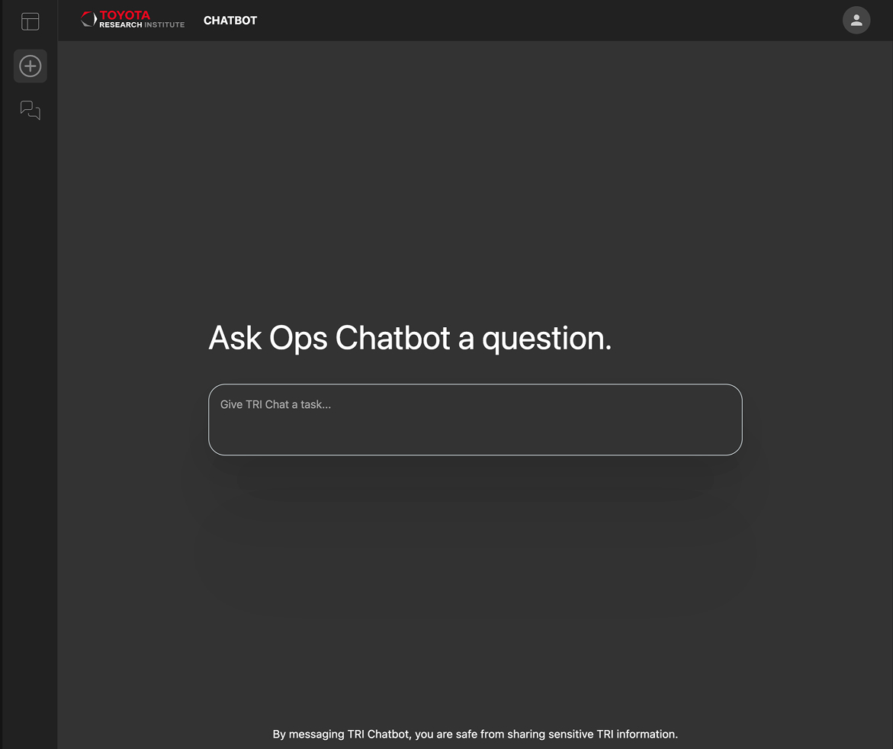
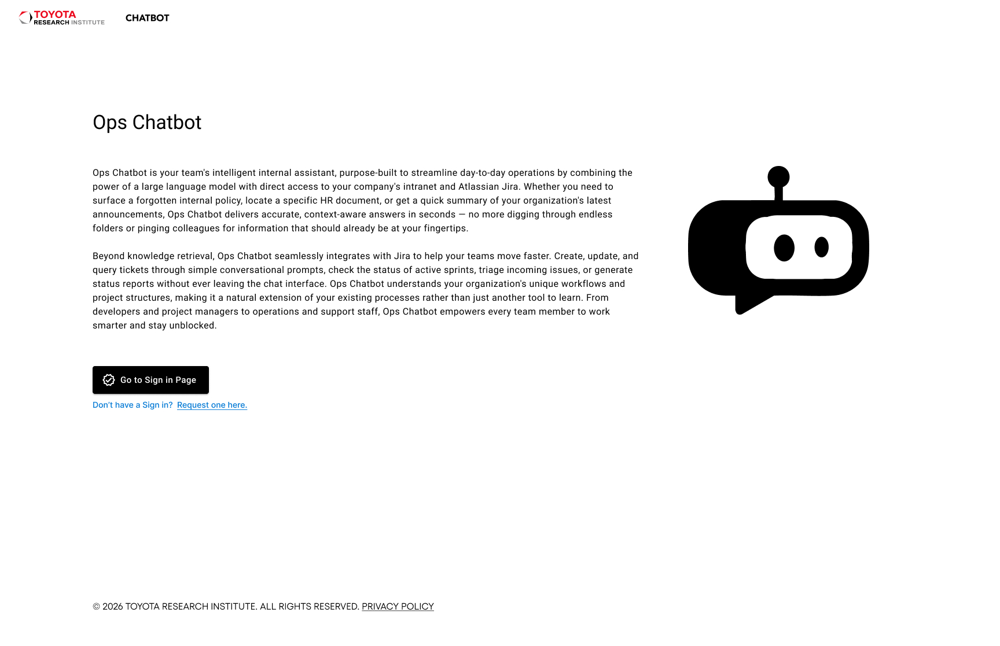

Links
Demos & Prototypes
Part 1 — Chatbot Interface
Part 2 — LLM Evaluation Tool
Screenshots


An internal AI-powered tool allowing users to select between three underlying LLMs for day-to-day tasks, spanning an evaluation dashboard and a voice-enabled mobile interface.

